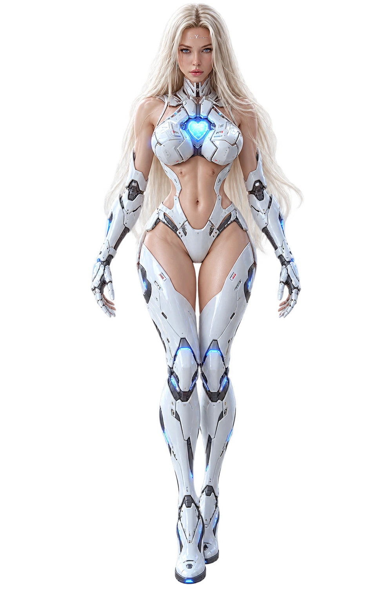

🎵 Production profile
These profiles shape the written brief only; this app does not connect to a generation API.
Custom Style stays separate from sonic elements to reduce conflicting or duplicated instructions.
Automatisch aus Subgenre + Mood generiert — für Midjourney, Flux, Stable Diffusion
| Kombination | Status | Hinweis |
|---|---|---|
| Lade Matrix… | ||
Baue Layer-basierte Prompts — jeder Layer hat eine eigene Rolle und ein eigenes Subgenre
LYVRA · Living Yielding Vibration and Resonance Architecture
Ein lokales, regelbasiertes Facetten-Template. Es greift nicht auf LYVRAs natives Repository oder Runtime zu und erzeugt keine Suno-Audios.

01 / KLANGARCHITEKTUR
Ein Musikintent. Motor als wichtigste kinetische Referenz, nicht als alleinige Kompositionsautorität. Creator-Kontrollen bleiben getrennt von Suno-Textfeldern.
02 / OPERATIONSKONTROLLE
Laut Blueprint sind v6-Einzelgenerationen auf bis zu 8 Minuten ausgelegt. Zehn Minuten benötigen Seed unter 8 Minuten, Extend und Studio-Arrangement. Dieser Plan rendert oder analysiert kein Audio.
03 / STIMME UND PROSODIE
Blueprint-Status: Entwicklungskandidat (Stand 01.10.2026), keine freigegebene Produktionsfacette. Phonemtests bleiben Kandidaten, bis alle erforderlichen Hörbelege und Creator-Freigabe vorliegen.
MANUELLE QUELLENPRÜFUNG
Suchbuttons öffnen öffentliche Suchseiten. Kein automatisches Readback. Speichere Quelle, Datum, Beobachtung und Grenzen nach eigener Prüfung.
Das angegebene Native-Repository und der Branch sind keine automatische Authority-Prüfung. Speichere einen SHA nur nach eigenständigem Readback.
Export enthält Eingaben, Renderer-Vorlagen, Controls, Studio-Plan, Speech-DEV-Daten und manuelle Evidenz. Keine Tokens oder Audiodateien.
Build export-ready generation, source, Studio 2 and custom FX briefs from your live Core prompt.
These profiles shape the written brief only; this app does not connect to a generation API.
Custom Style stays separate from sonic elements to reduce conflicting or duplicated instructions.
Slider values guide the generated text; they are not sent as API parameters.
Describe each source and its musical role. No files are uploaded or processed by this page.
Production Engine uses the same subgenre, BPM, scale, mix, moods and sonic elements as Core.
Select up to two targets for a focused Studio brief.
Select up to two effect briefs.
Stereo-Breite für Acid, FX und Atmos. Kick und Sub bleiben geschützt. This creates design briefs only; it does not process audio.
Rolling bass, dry kick and mono-stable kick-bass architecture. These controls generate production briefs; they do not process audio.
Subgenre-based effects, tension shaping and arrangement-aware motion. FX briefs only; no audio is processed.
A traceable cause-and-effect chain for production decisions. Confidence reflects matched rules and optional manual review, not automatic audio analysis.
Rate a rendered result after listening. Optionally enter a stereo-correlation reading from an external DAW/analyzer; this app does not analyze audio.